Comfy Reader features and getting started
Install Comfy Reader for Chrome
Chrome edition · Comfy Reader 2.1.16 · Updated November 10, 2026.
Comfy lets you choose how digital text looks and sounds. Adjust an unfamiliar website font, open up crowded spacing, choose a comfortable theme, or listen while following the text.
It is for anyone who wants a more comfortable way to read websites, emails and pasted text. Use quick tools on the original website, or bring the content into Comfortable view for a consistent reading layout.
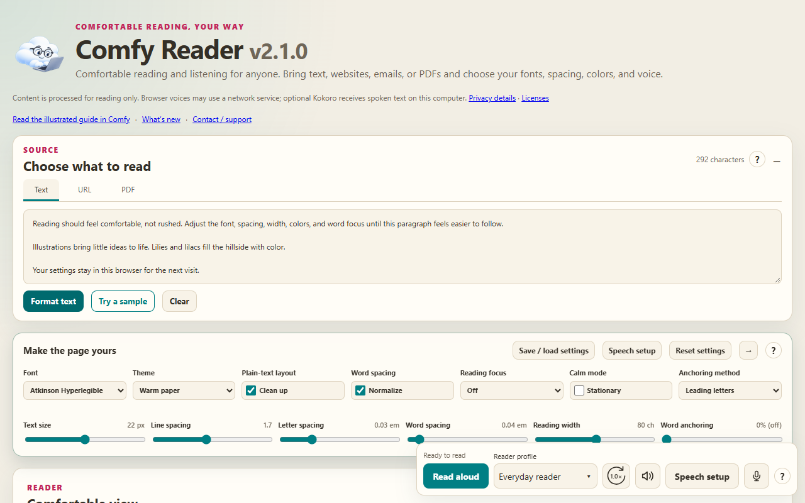
Start with ordinary text. Word anchoring is optional and starts off, using Leading letters at 0%. You can change the look without turning on bold anchoring.
Keep up with Comfy updates
Open What’s new for release versions, dates and feature changes. The link in the floating website toolbar’s help opens the notes in Comfy, including the NEW notification link. Current changes are expanded; choose an older version heading to expand or collapse its notes.
After an extension upgrade, Comfy shows a NEW badge on its browser icon and a dismissible notice in the reader. Open What’s new beside the illustrated guide, or use What’s new in the website toolbar’s help. Closing the release notes or choosing Dismiss marks the update as read across Comfy tabs. The notes stay available later. Fresh installations receive no update notice, and Comfy never opens an announcement tab automatically. Only the current release version and whether its notice is unread are stored locally; reading content is not part of this record.
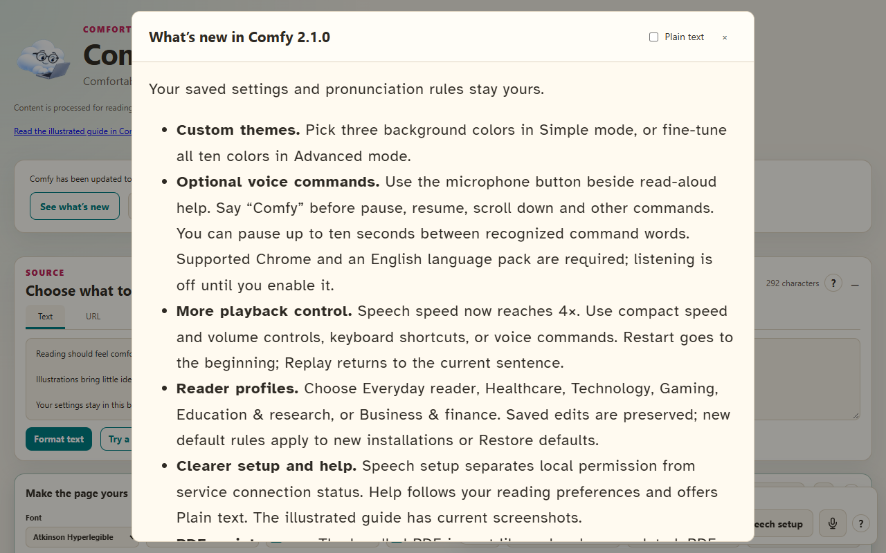
Make the page yours
In 2.1.2, new installations start with Simple reading controls: font, theme, text size and reading focus. Choose Advanced for spacing, width and anchoring. Existing saved setups start in Advanced, and hidden settings keep their values.
Starting points offers Larger text, More breathing room, High contrast and Gentle focus. Preview changes in Comfortable view, then Apply or Cancel. Undo appearance change reverses the last applied starting point or Reset appearance. These actions preserve playback and pronunciation settings. Website toolbar settings apply to the website; Comfortable view has its own appearance.
Comfy gives readers personal controls for websites with small fonts, crowded paragraphs or uncomfortable colors. Choose the combination that feels easier to follow.
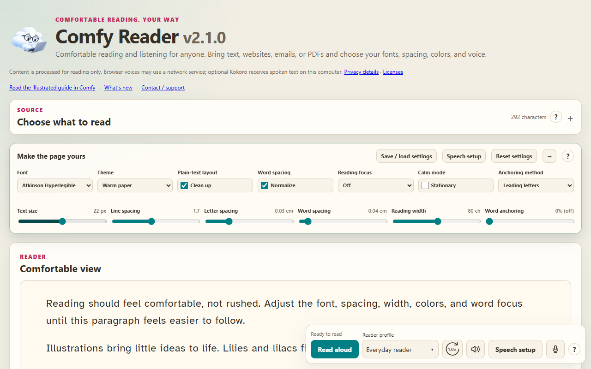
Choose a font and readable size
Choose familiar fonts such as Arial or Georgia, or try Atkinson Hyperlegible, Lexend and OpenDyslexic. Adjust text size and reading width for a comfortable number of words on each line.
Give text room to breathe
Control line spacing, letter spacing and word spacing independently. Normalize repeated word spaces when inconsistent spacing makes a passage harder to follow. Plain text layout can suggest paragraphs and lists for pasted text; turn it off when you want the original line breaks.
Choose comfortable colors
Warm paper is the starting theme. Soft blue, Sandstone, Walnut, Dark, Reading green and High contrast offer other background and text combinations in the dedicated reader. The on-page toolbar keeps the original website colors and layout while changing its typography.
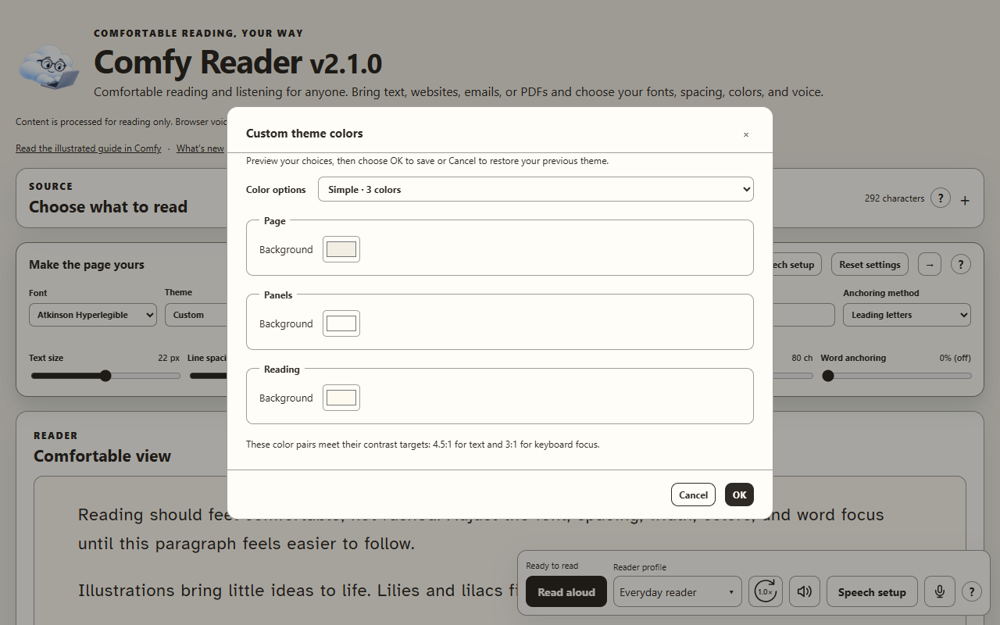
Keep your place with reading focus
Focus on one line or one paragraph while surrounding content is dimmed. Follow with the mouse or use the stationary focus arrows at the right, below the expanded appearance toolbar or its collapsed arrow. Space is reserved so they do not cover text. During a prepared read-aloud session, the recording controls the focus. Automatic scrolling follows spoken text in buffered steps, leaving upcoming lines visible instead of moving the page on every line.
Make emphasis a choice
Word anchoring can bold leading letters or the first one or two syllables of eligible words. Leading letters starts at 0%, with no added anchoring. Readers can opt in, adjust the amount and soften unanchored letters with remaining-text opacity. Recognizable code and data examples stay unanchored.
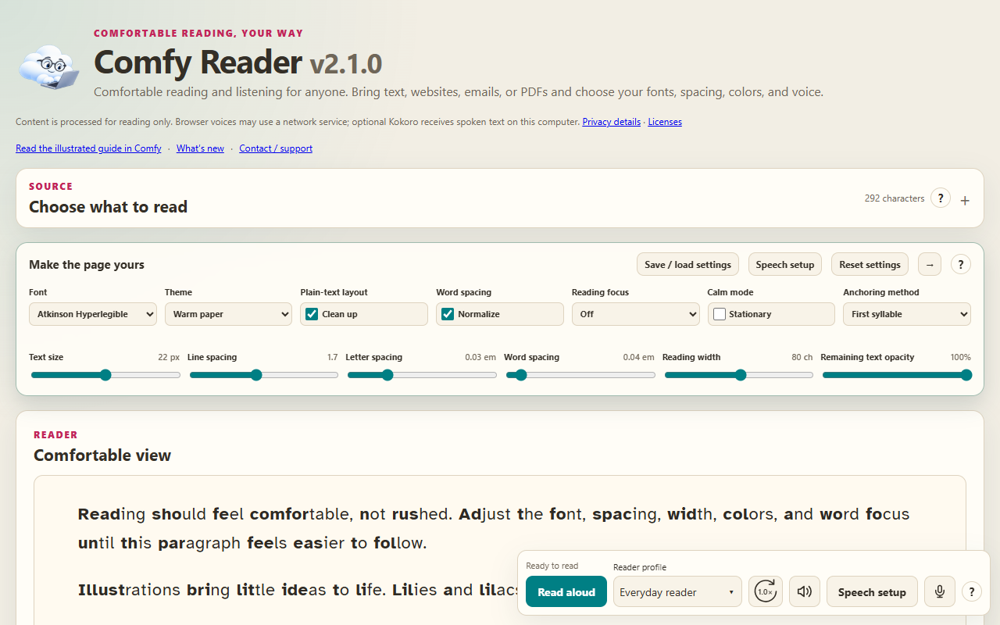
Readers with dyslexia may wish to explore these preferences. Benefits vary; Comfy does not promise a clinical or reading-performance outcome.
Save and load settings to keep a preferred setup or move it between installations. Help windows can use the selected reading settings, with a plain-text option when preferred.
Read aloud and customize the voice
Listen to the whole passage, or select a section in Comfortable view and read only that portion. Floating controls stay available as you scroll.
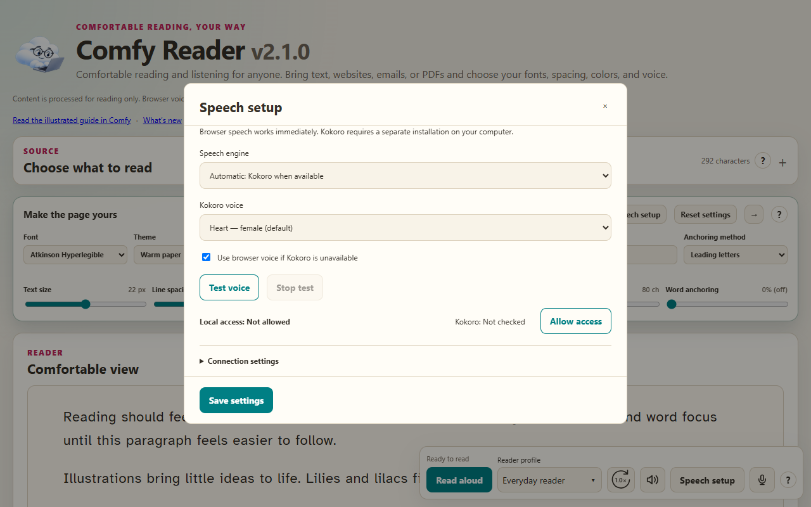
Follow the recording
Prepared Kokoro audio shows elapsed and total time with a seek slider. Moving the slider while paused keeps playback paused. Browser speech shows word position instead of a recording duration. Choose Compact for fewer playback controls or Full controls to restore them. Open original appears in the full controls for website sources. Speed and Volume have visible labels and open by click, keyboard focus or pointer hover.
Read, pause, resume and replay from the same controls. Stop and cancel resets the session and can cancel Kokoro preparation. A flowing highlight follows spoken text; click a word to read from its position. Follow-along scrolling keeps the active text above the middle with upcoming lines visible. Reduce animation uses a stationary highlight.
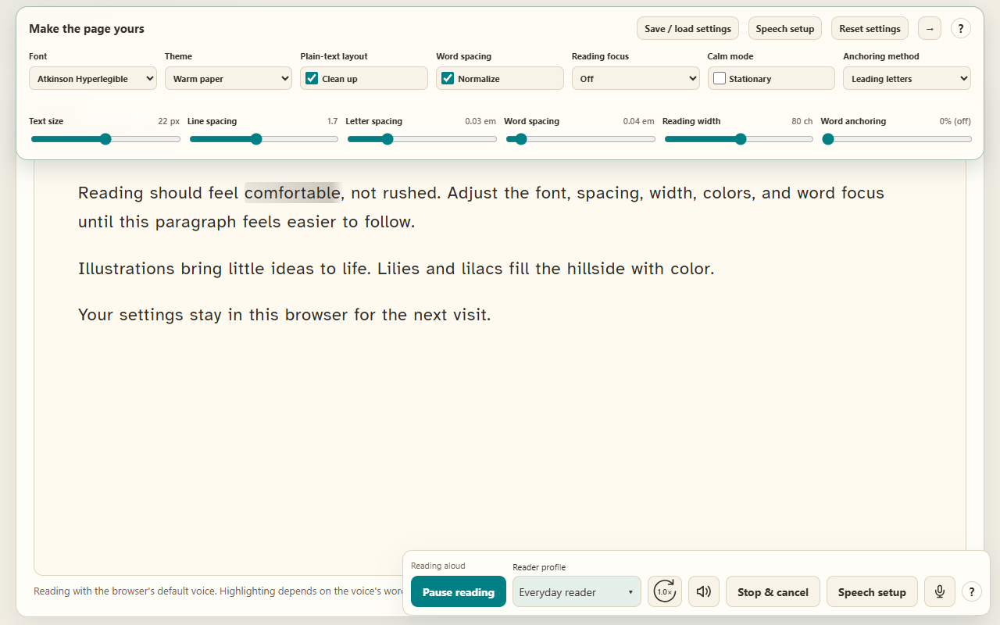
Optional voice controls
In the dedicated reader, choose Voice controls and Start listening to use English commands on this computer. A themed notification shows when Comfy hears a command and the result. Speech without the Comfy wake word is ignored without command notifications. Complete commands can run from a brief stable recognition preview without waiting for the final transcript. Say a complete phrase or say “Comfy” and give the command with up to ten seconds between words. Common sound-alikes and small recognition errors are accepted, such as “paws” for pause. Feedback shows the recognized words and matched command. Unclear or ambiguous commands ask you to try a specific phrase. Microphone input volume is adjusted in Windows sound settings; Comfy’s speaker volume only affects playback. The Voice controls popup contains Chrome and Windows microphone tips and shows the detected default device when Chrome exposes its name. Speech recognition does not report its active device name, so confirm any override in Chrome settings. Say “Comfy, pause”, “Comfy, resume”, “Comfy, play”, “Comfy, restart” (beginning of the passage or selection), “Comfy, replay” (beginning of the current sentence), “Comfy, stop reading”, “Comfy, scroll up”, “Comfy, scroll down”, “Comfy, follow reading” or “Comfy, back ten seconds”, “Comfy, forward ten seconds”, “Comfy, slower”, “Comfy, faster”, “Comfy, volume up”, “Comfy, volume down”, “Comfy, mute”, “Comfy, unmute” or “Comfy, stop listening”. Voice scrolling suspends automatic following until restored or reading is stopped. Chrome may need an English language pack and microphone permission. Cloud recognition is not used; unsupported installations keep the regular controls. Use headphones to reduce commands triggered by the reading voice. Listening stops when the tab is hidden.
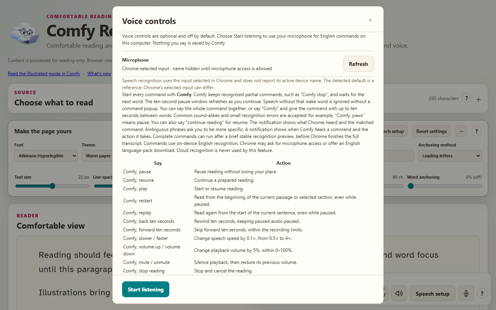
Choose the pace and pronunciation
Adjust speech speed and volume from compact hover controls. After a mouse click, Space pauses or resumes reading even when a button remains focused. After Tab navigation, Space activates the focused button normally; K remains a playback shortcut. Shortcuts leave text fields and popup windows alone. Keyboard shortcuts support playback, seeking, speed and volume; the read-aloud help lists the keys. Pronunciation profiles include Everyday reader, Healthcare, Technology, Gaming, Education & research and Business & finance. Edit pronunciation rules for abbreviations, symbols or context, such as reading 30s as thirty seconds in a game. Profiles inherit shared Everyday reader rules and can be exported.
Start simply or add local Kokoro
Browser speech needs no separate service installation; some voices use network services. Optional local Kokoro prepares audio with word timing for the dedicated reader. The floating website toolbar uses browser speech. In Speech setup, choose a voice, use Test voice and save your settings. Stop test cancels sample preparation or playback. Saving valid speech settings closes the setup window; errors remain visible so you can correct them.
The recommended Comfy Kokoro package includes Misaki, which uses English sentence context to prepare pronunciation before Kokoro generates audio. It runs locally inside the Kokoro worker, not as a second service. Reader profiles apply first and remain useful for abbreviations and personal preferences; context-aware pronunciation is not perfect.
Local access shows whether Chrome permission is allowed; the separate Kokoro status shows whether the service connected. Expand Connection settings for the address, Test connection and setup instructions. Updating the Chrome extension does not update Kokoro or Misaki. Download the current Comfy Kokoro + Misaki ZIP and run Setup.cmd for either a new installation or a recognized update. Finish or cancel any active recording first. The installer preserves service settings, backs up replaced files and tests speech before switching to the new files. It includes private Python and the eSpeak fallback, so no separate Python or eSpeak MSI is needed. If the Microsoft Visual C++ runtime is missing, setup asks before downloading its signed installer directly from Microsoft. Full Kokoro setup and update instructions.
Optimize local Kokoro speed
The current Comfy Kokoro CPU worker reads cpuThreads from service-settings.json beside speech_worker.py. Back up that file and preserve its other settings. Try 2, 4 and 8 threads, restarting Kokoro fully after each change. Prepare a sample once to warm up, then time three new recordings with identical text, voice and pronunciation profile. Use Stop & cancel only after each recording is ready, then Read aloud; Replay reuses audio. Compare the middle warmed-up time at each setting with similar computer load. More threads are not always faster, and the first request after a restart or cancelled preparation can include model and Misaki initialization. Restore your normal speech preferences after testing. See Full Kokoro setup and optimization instructions for editing, restart and rollback steps.
1 Open an email from Gmail
Open the email you want to read. Without selecting text, right-click inside the visible message and choose Open in Comfy. Comfy captures the visible email body and opens it in a reader tab. In a conversation, the first visible message body is used.
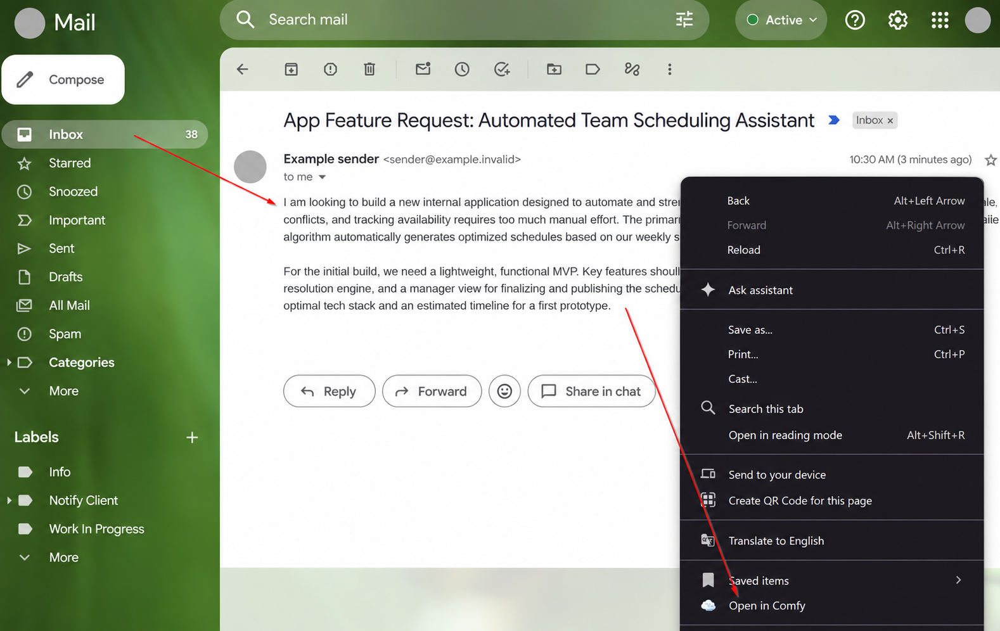
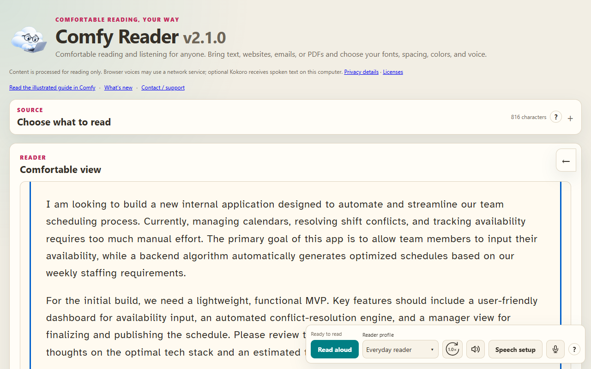
2 Open highlighted text
Select the passage you want on a website, then right-click and choose Open in Comfy. Selected text takes priority over the whole page. Available formatting such as paragraphs, headings, lists and tables is retained where possible.
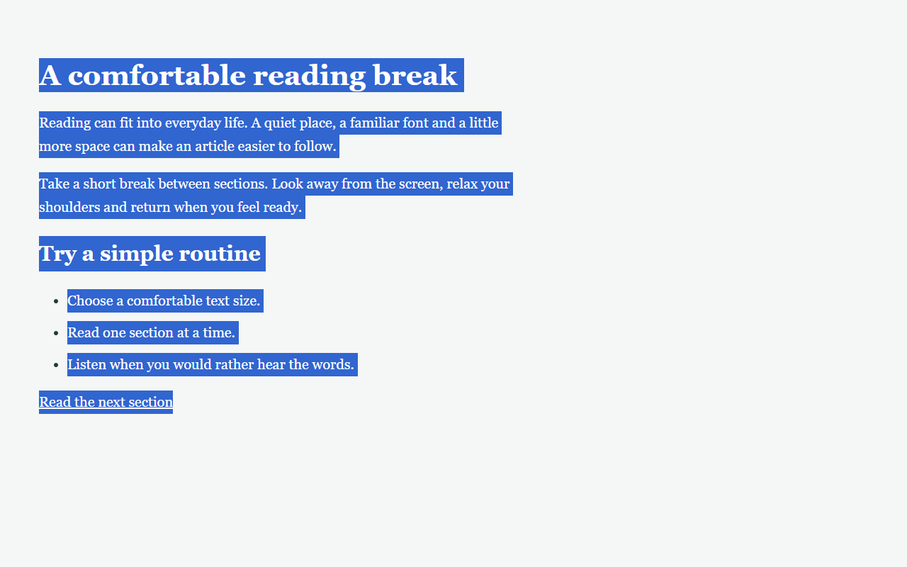
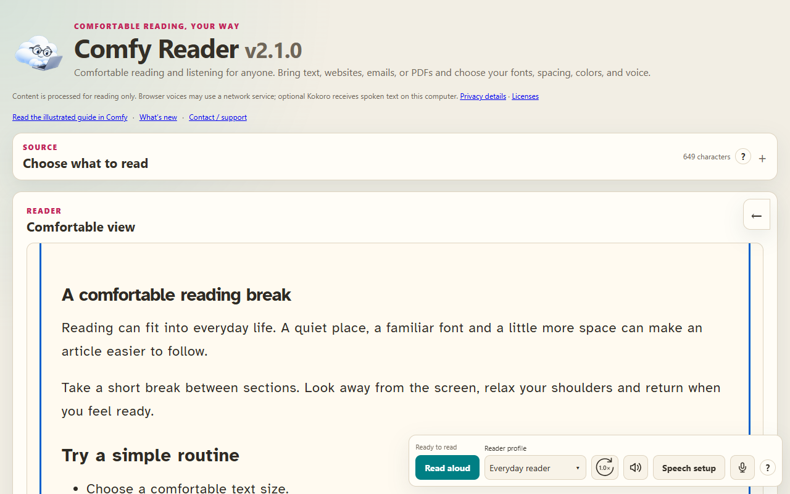
The Source panel starts collapsed. Use this route when you want only part of a page or a direct URL download cannot access its readable text.
3 Use the toolbar on a website
Click the pinned Comfy cloud icon beside the browser address bar. The floating toolbar adjusts readable text on the current website, so you can stay with its images, links and layout.
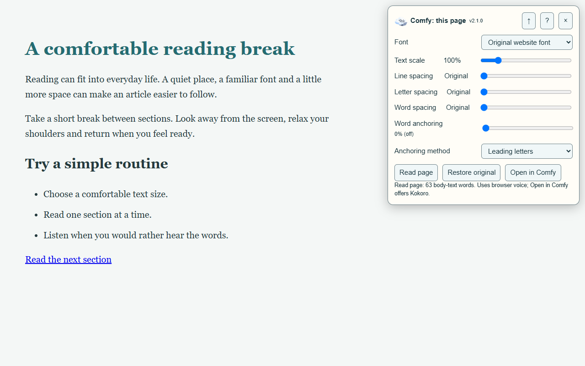
Drag the title to reposition it. The up arrow collapses it; the down arrow expands it. Your position and collapsed state are remembered. X or Restore original removes the toolbar and restores the changes it made.
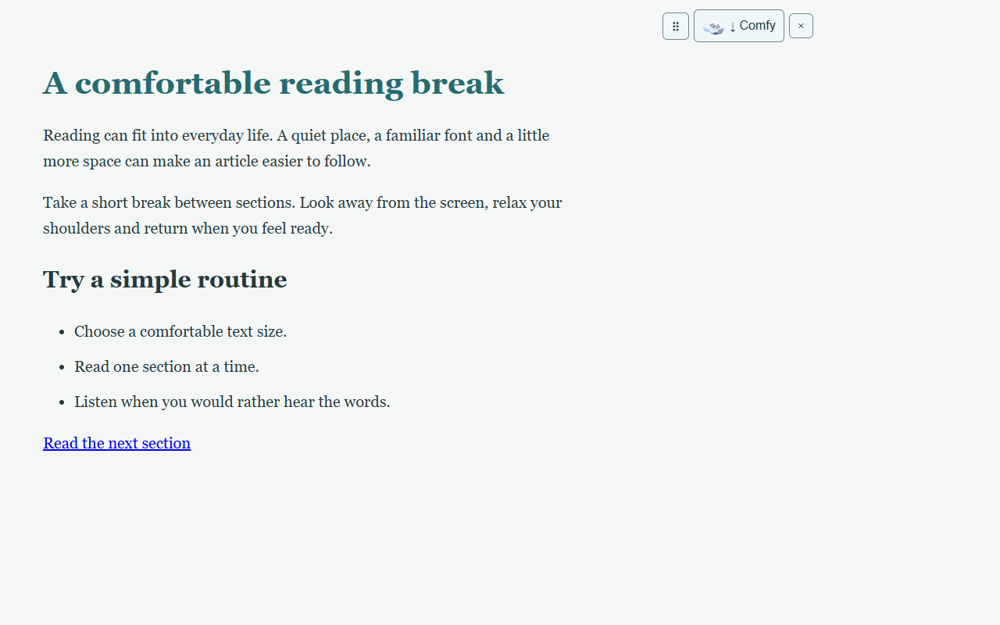
While enabled, Comfy follows links, reloads and Back or Forward navigation in that tab where Chrome permits access. A different site may require clicking Comfy again. Other tabs are not automatically enabled.
4 Read a website in Comfortable view
For the dedicated reader, right-click a website without selecting text and choose Open in Comfy, or choose Open in Comfy on the floating toolbar. Comfy rebuilds the readable content already loaded in the browser, using your reader theme, font and spacing.
Follow a link inside Comfortable view to load and format its next page. The browser Back and Forward buttons move through the reader navigation. Use Open original to return to the website itself. A next-page download may need site access; if a login, script or security check blocks it, open that page in the browser and send it to Comfy again.
The rebuilt view can preserve headings, lists, tables and links. Images are omitted, although useful image descriptions and captions may be included. Expand hidden sections or load additional content on the original page before sending it; protected pages and embedded content may have limits.
5 Paste text into the Comfy page
Open the dedicated reader through the extension options, or bookmark its reader page. Choose the Text tab, paste or type your content, then select Format text. Plain text layout and Normalize word spacing are optional; pasted rich HTML can retain more structure.

The URL tab is another way to request a public page directly. When that download is blocked, use the browser toolbar or right-click route to send its already-loaded content instead.
6 Try PDF support
The PDF tab can import selectable text for reading or create a formatted PDF download. PDF support is available today and remains an area for future development rather than the main focus of Comfy. Conversion quality depends on the document; image-only scans need text recognition elsewhere first.
Choose a passage and try it
Start with an email or article you already need to read. Set a comfortable font and spacing, explore reading focus, and try listening. Keep the preferences that help you and leave optional anchoring off unless you want it.